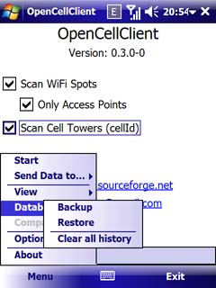

| Home | News | Documentation | Support | Downloads | License | Code | Change log | TODO | Donations |
|
After OpenCellClient starts you can use immediately. There are no big configurations. Just click the Actions/Start option. The application will turn your GPS receiver on and will start to search for tower codes. The application will search after regular intervals. You can modify this option using Action/Set interval option. Please choose one of the following options: 1, 5, 10, 30 ou 60 seconds. 5 seconds is default. The OpenCellID.org service ask for a key for each user. This key is used by the users to send informations. OpenCellClient has an internal key, but you can register another one for you clicking here. Take a note and don't lose the key. You must type (or paste) this key using the option Actions/Set OpenCellId Key/Use Your Own Key. Using your own key you will be able to list and delete the towers you sent to the service. What information OpenCellClient receive from cell towers? - CellID: Cell Tower Code (identification); - LAC: Local Area Code; - MNC: Mobile Network Code; - MCC: Mobile Coutry Code. |

|
After get these data you can turn the application off without lose information, because they are stored in file system.
Using your preferred internet connection you can send the collected data to OpenCellId.org using the Actions/Send to OpenCellID option.
Actions
|
There are a few options in main menu: - Start/Stop: This is the main option of the software. Use it to (surprise!) start or stop the search for cell towers and their coordinates. The device will turn on the GPS receiver and will scan from time to time the cell tower it is connected. If this tower does not exists in database it will be added with or without coordinates. But why without coordinates? Just to let you know the software found a tower but the GPS is not valid yet. When your device returns to this tower and the GPS is ok, the coordinates will be stored. - Send to OpenCellID: This action will connect to OpenCellID and send all informations your device collected. Please note only towers with coordinates and marked with "Y" in "new" column will be send. This "new" column show towers you didn't send yet. You will see a progress bar and the indicative of how many towers you sent to the service. |

|
|
- View/Coordinates not sent: This action let you see all towers you didn't send to OpenCellID yet. - View/All coordinates: This action let you see the entire history of towers your device collected. - Main screen: This action show the startup screen. |
|
|
- Database/Backup: Export all informations from database to a local file. This is useful when you need to hard reset your device
or if you decide to buy a new one. - Database/Restore: Import informations from an external backup. If informations conflicts, the information stored in database will not be changed. - Database/Clear entire history: Use this option carefully. When you active this action all the database will be destroyed. |
 |
|
- Option/Debug mode: When you check this option, the software will start to write a file named opencellclient.txt with a lot of
information useful to fix bugs. If you find some unusual behavior, please check this option, repeat your steps and send the file to support. - Option/Auto send data to OpenCellId: if this option is checked, when a new tower is found the information will be send immediately to OpenCellID. Be sure you have a good data plan before use this feature. - Option/Prevent sleep mode: Check this option if you don't want your device uses the sleep setting and never go to sleep while it's scanning. - Option/Reset GSM before start: If this option is checked, when you click Actions/Start, your GSM radio will be turned off and then turned on again. Some devices need this option to collect informations correctly. - Option/Reset device before start: If this option is checked, when you click Actions/Start, your device will soft reset. After reboot this application will start automatically. Some devices need this reset to collect informations correctly. |
|
| - Options/Set Interval: You can select the interval in seconds before each scanning. |

|
|
- Option/Set OpenCellID Key: This option let you choose between two options: use of internal key or use your own key. The internal key
is used by default, but you can create your own key and type the code here. To create your own key go to OpenCellID SignUp page and make your registration. You will receive your key in your e-mail account. When you use your own key the action View/List from OpenCellID will be available for you. But, you must be sure you typed the key correcly. |
|

|
Mail: joubertvasc@gmail.com |